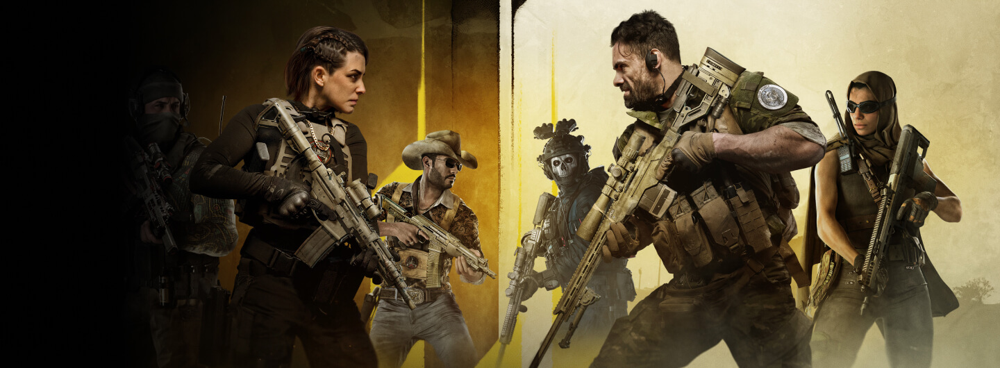
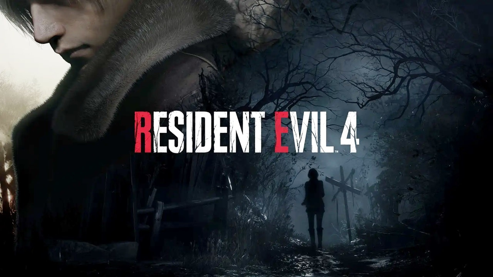

Warzone 2: Season 3 Reloaded
postado em 11 de maio de 2023 A Temporada 03 Reloaded chegou com o lançamento do Beta da Ranked de Warzone, um novo episódio Atomgrad Raid, um novo espaço de jogo DMZ, um novo mapa principal de Multijogador e muito mais! Continue lendo para ver todos os detalhes e ajustes que chegarão nesta Temporada em Modern Warfare II e Warzone 2.0.
leia maisCounter–Strike 2
postado em 11 de maio de 2023
O Counter–Strike 2 representa o maior avanço técnico na história do Counter–Strike, garantindo novas funcionalidades e atualizações durante muitos anos. Todas as novas funcionalidades serão reveladas quando o jogo for lançado oficialmente este verão, mas a jornada para o Counter–Strike 2 começa hoje com um teste limitado para jogadores selecionados do CS:GO.
leia maisJogos mais jogados nos últimos anos
Lançamentos
Resident Evil 4 Remake
Após quase 20 anos, o clássico do survival horror está de volta! O remake de Resident Evil 4 chegou em março de 2023 e agradou (e muito) a crítica especializada e os fãs da franquia. O jogo está disponível para PlayStation 5, Xbox Series X|S e PC. leia mais
Hogwarts Legacy

Hogwarts Legacy é um RPG que se passa no universo de Harry Potter (antes dos livros) e coloca o jogador como um estudante de Hogwarts, contando com aulas de magia, embates entre as Casas e lutas com varinha. O jogo chega em 2023 para PlayStation 5, Xbox Series X|S e PC. leia mais
Última atualização do site: 11 de maio de 2023